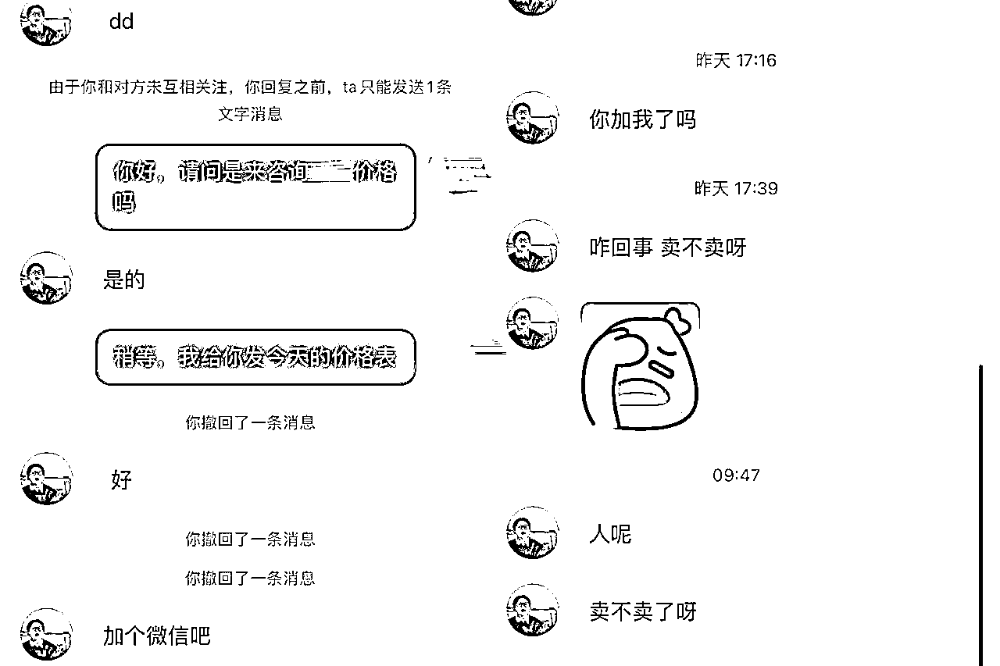

来源：https://nivut760ftk.feishu.cn/docx/Nmjfd3gQKorQP2x8WYtcqSwPntb
大家好，我叫艾小飞，擅长小红书引流
我相信有很多的圈友，都想在小红书上做搬运，但头疼的是，每次搬运都会被平台提示！
甚至被严重的限流！导致很多圈友想做搬运，却迟迟不敢下场！
同时我也在各大平台上搜索相关的资料，发现要么是讲大道理的空话，要么是瞎编出来的假经验！
参考的价值很低，让人看了云里雾里的，不知道该如何去操作
正好我这几天在实操残蟹的项目，也是全程在用搬运的方式来完成引流转化和成交的，不但没有被限流，
反而还引来很多的客源，新号第二天就跑通全程并成交了第一单，第三天晚上又起个新号，立马就来了精准客源
所以今天我打算用实操的案例，来给大家分享下，我在小红书上做搬运的一些经验和心得，
希望能对你有一点点的参考价值，也希望你能更轻松的获取到流量
好了，我们开始吧
可能很多人比较关心的，就是如何找素材的问题。在这里想问你个问题，你平时都是喜欢到哪个平台上获取素材来源的
抖音？小红书？淘宝？还是其他？
可能这几个平台你都会去接触过，但我建议你还是在小红书上找素材会比较好
是不是会有人疑问：啊！为什么？在小红书上搬运小红书的素材，难道不会被限流吗？
哈哈直接搬肯定会限流，但需要技巧规避！
什么技巧？我举个案例给你参考
比如我现在想做大闸蟹对吧，但我这边是在广西，身边又没有江苏的大闸蟹资源，你让我去拍素材，怎么可能做得到对不对
所以我就去小红书搜：大闸蟹
然后找到一个是以客户的角度来分享大闸蟹经验的帖子
去翻博主的评论区，然后我看到哪张图片很有颜值，很吸引我的图片，让我看了都想买都想吃的图片，我就把它截图保存下来！
连续翻找20个类似这样的账号，这样我的素材库，基本上就可以连续够发好几天了
可能你会问，为什么会在评论区找呢？
因为在评论区留言图片的，大多数都是真实的用户反馈图，让人看了更加的接地气且真实！能让用户短时间内对你有信任感！
而且拍的质量不比某些博主的差！最主要是，因为评论区图片不录入系统，被判搬运的几率比较低，所以就成了我积累素材的重要来源
同样的，如果正愁着不知该去哪找产品的素材，不妨可以试试这个小方法，切记一定要截图
不能保存原图！不能保存原图！不能保存原图！(已提示三遍)
当找来了很多素材后，如何去重，又成了一个头疼的难题
很多朋友因为不会去重，导致好不容易账号有了一点点流量又被限流了！像是刚带来了一点点希望，又被扑灭了！
搬运过来的素材该怎么去重呢？
我以自身的案例来给你们分享吧
当我累积足够多的素材后，我会从中淘汰掉10-20%颜值很差，没有质感的图片，然后在把剩下的每张截图，裁剪成3:4比例
通过水平镜像把它给反过来
完成后，然后在美图秀秀上，加个滤镜，配个简单的文案，这样就完成基础去重的步骤了
但！任何搬运并不是100%安全无风险的。
比如你看看下面这张图
就是被系统给提示了
做搬运的，被提示是件很正常的事，常在河边走，哪有不湿鞋的对吧
但很多人遇到这种情况就慌了，不知道下一步该怎么办了！
该如何避规风险呢？
我还是拿我的这个案例来举例
当时平台建议让我优化笔记内容，我在想，我图片都是从评论区拿来的，而且也搜了整个小红书笔记都没发过这张图，哪来的非原创？
我猜测多半是被人恶意举报的，但平台又没有直接的证据，证明我是搬运别人的！会不会是平台出现了误判？
于是我就试着重新编辑笔记，啥也不动的又重发了一遍
过了半小时后，非但没有了违规提示，流量居然还比上一篇的更好！
哈哈这招真的很神奇！这是什么歪路子的神操作！
我到现在都还没搞懂，但我知道这招是真的很有效，有谁知道的可以帮忙解释下
每当我有违规提示的时候，都是这么操作去避免违规和限流的！而且流量都会小幅度的往上升，很神奇，如果你们有遇到跟我一样的情况，也可以去试试
但有一种情况，你们就不能这么去试了
你们看看这张图，如果接收到平台这样的违规提示，就说明你的这个账号，已经被同行给盯上了，也多半是被举报的，同时你也成了平台的重点观察对象
这时候该怎么办呢？别慌也别急！
破解的办法分为两步走
第一步要马上删除掉违规的笔记，检查看看已违规的图片里，是否带有别人的水印，这张素材是不是下载来的，是不是没有做好多个步骤的去重！这些都是要复盘反思的！
因为苍蝇不叮无缝蛋，既然平台查到你，肯定是抓到了你的小毛病，所以下次不要再犯这种小错误了，而且这张图片，不能再重复的使用了
然后找一张整个小红书都没发过笔记的图，继续多遍的去重，再发布下一篇，持续多发几篇，流量就会慢慢的恢复正常了
第二步，提高警惕，排除同行
你的笔记被判搬运违规，多半是被举报的！至于谁来举报你，谁也看不到，平台也不会跟你说的
只能靠自己在私信里和评论区里，一步步的去排查，看看最近有哪些人，行为是比较异常的
比如昨天我遇到了这样的人，他的行为就很反常，要是你遇到这样的客户，你该怎么办？

刚开始他来正常的问我大闸蟹的价格，我还是给他看了价格表，但他的那句“加个微信吧”，让我觉得有点不对劲！
怎么有客户一上来啥也不问，就问你要微信的！我马上警惕了起来，撤回了刚刚的话术和价格表
ps：因为价格表里有违禁词
通常有需求的客户，不会马上来问你直接要微信的，他们对你都没什么信任度，大多数要么是不回复，要么会问你几个细节的问题，如果觉得合适，最后才到加微信的环节
所以当你遇到有人行为异常时，可以提高一点点的警惕心，不给对方留下一点点的把柄，要不举报你成功率是很高的！
评论区有人恶意评论的，恶意导流的，都要马上删了，同样的你也不能在评论区留下违规的话术，因为评论区的留言是公开的，同行举报你也是很简单的！
在这里我可以分享个过滤同行的小技巧，不一定适合所有人，可做个参考吧
当别人来问你时，不要那么着急的发东西给他，而是多跟他聊天，多问他问题
如果感觉对方很急，就少搭理他，要是有意向要购买的，就可以进一步的转化
当对方有意向要下单付款时，你再让对方主动的留下微信号，你去加他
千万不要你主动去留微信号！这是引流大忌！
好了扯得有点远了，以上的这些都是我实操出来的搬运经验！虽然不是很密集的干货，但至少对于想做搬运的朋友来说，也能提供一点点参考价值吧
其实做搬运不难的，只要你花点时间去实操，很多当下头疼的问题都会顺势的解决了
就像我这条朋友圈所说的
在小红书实战过程中，很多想不通的小问题，都会慢慢的破解了
何以解忧，唯有实战，才能消除障碍！
谢谢大家愿意花时间来阅读我的文章
我叫艾小飞，我们下期再见！
原创：艾小飞
转载可私信
禁止搬运和抄袭
微信：aifei9977 （记得备注来意）